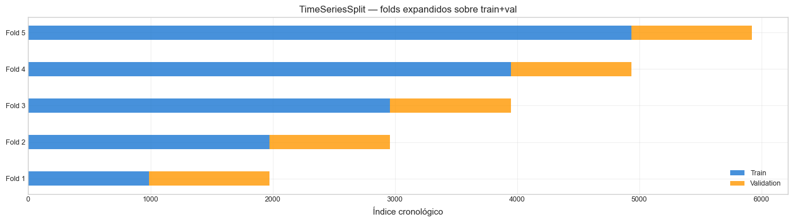
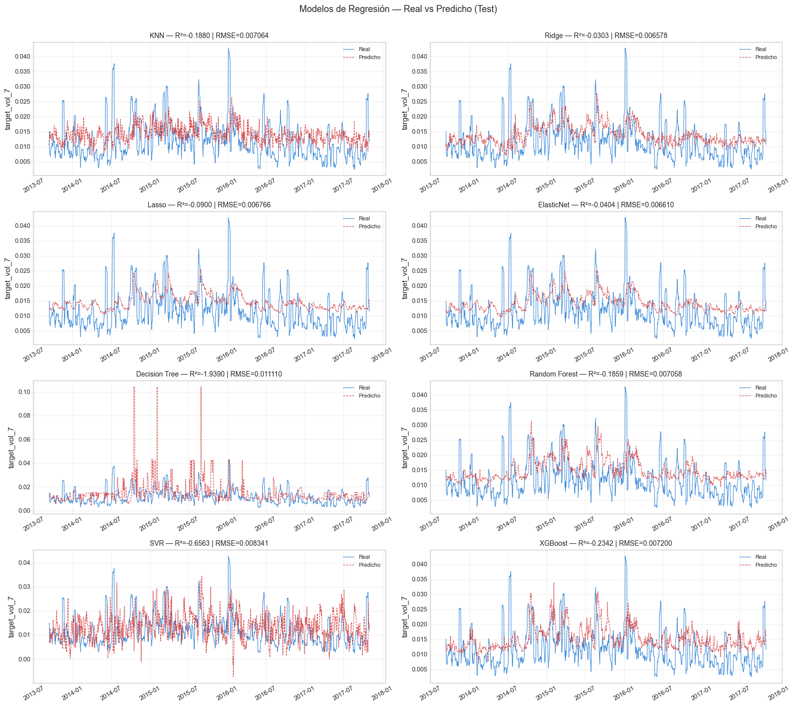
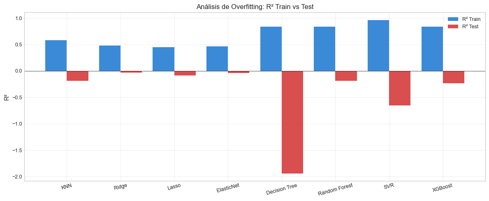

4. Modelos de Regresión (ML)#
Curso: Machine Learning · Pregrado en Ciencia de Datos · Universidad del Norte Docente: Dr. Lihki Rubio Equipo: Juan Camilo Conrado · Sergio Cadavid · Mateo Chang
Este notebook entrena los 8 modelos de regresión obligatorios sobre el target target_vol_7 y compara su desempeño con los benchmarks econométricos del notebook 03.
Modelo |
Familia |
Justificación |
|---|---|---|
KNN Regressor |
Basado en distancia |
Cap. 2 |
Ridge |
Lineal regularizado L2 |
Hoerl & Kennard (1970) — Cap. 3, referencia metodológica |
Lasso |
Lineal regularizado L1 |
Tibshirani (1996) — Cap. 3, selección de features |
ElasticNet |
Lineal L1+L2 |
Generaliza Ridge y Lasso |
Decision Tree |
Árbol no-paramétrico |
Cap. 5 — bloque base de RF/XGB |
Random Forest |
Bagging de árboles |
Breiman (2001) — Cap. 5, ensamble por varianza |
SVR |
Kernel rbf |
Cap. 6 — modelo no-lineal |
XGBoost |
Boosting de árboles |
Chen & Guestrin (2016) — Cap. 5, ensamble por sesgo |
Política metodológica:
Validación cruzada interna:
TimeSeriesSplit(n_splits=5)sobre train+val.Evaluación final sobre test holdout (15% más reciente).
Todos los modelos viven dentro de un
Pipelinepara garantizar ausencia de leakage.Los hiperparámetros aquí son los defaults razonables; la optimización formal se deja al notebook 07.
Decisión metodológica: horizonte de evaluación#
Los targets target_vol_7, target_vol_14 y target_vol_21 se construyen
en el notebook 02 (NB 02) para los 3 horizontes declarados en el alcance
del proyecto.
Sin embargo, la evaluación cuantitativa de modelos se concentra
exclusivamente en target_vol_7 por las siguientes razones:
Horizonte primario operacional:
PRIMARY_HORIZON=7ensrc/config.pyrefleja la decisión de equipo de tratar el horizonte de 7 días como el más relevante para una eventual aplicación en trading.Consistencia comparativa: entrenar y evaluar 8 modelos × 3 horizontes produciría 24 RMSE distintos y 24 análisis de residuos. Concentrar el análisis en un único horizonte permite hacer comparaciones estadísticas rigurosas (Diebold-Mariano, bootstrap CI, Bonferroni en NB 09) sin saturar el alcance.
Infraestructura preparada para extensión: los targets
target_vol_14ytarget_vol_21están construidos y guardados en disco. Replicar los notebooks 04-12 para esos horizontes es trivial: basta con cambiary_trainval = trainval["target_vol_7"]→trainval["target_vol_14"]o21.Uso de los otros horizontes: aunque no se entrenan modelos sobre ellos,
vol_14yvol_21SÍ se usan como features predictoras envol_ratio_7_14,vol_ratio_7_21,vol_ratio_14_28(NB 02). Es decir, capturan estructura temporal multi-escala en las predicciones detarget_vol_7.
# Path setup
import sys
from pathlib import Path
_root = Path.cwd().parent if Path.cwd().name == "notebooks" else Path.cwd()
if str(_root) not in sys.path:
sys.path.insert(0, str(_root))
1. Imports#
import json
import time
import numpy as np
import pandas as pd
import matplotlib.pyplot as plt
from sklearn.model_selection import cross_val_score
from sklearn.metrics import (mean_squared_error, mean_absolute_error,
r2_score)
from src.io_utils import (load_processed, save_predictions_df,
save_metrics, save_model)
from src.pipelines import get_regression_pipelines
from src.splits import make_tscv
from src.viz import set_style, color_for
from src.config import DATA_PROCESSED
set_style()
2. Cargar datos#
train = load_processed("train_reg")
val = load_processed("val_reg")
test = load_processed("test_reg")
# Concatenar train+val para el ajuste final (la CV interna se hace dentro)
trainval = pd.concat([train, val]).reset_index(drop=True)
# Cargar lista de features
with open(DATA_PROCESSED / "feature_columns.json") as f:
feature_cols = json.load(f)
X_trainval = trainval[feature_cols]
y_trainval = trainval["target_vol_7"]
X_test = test[feature_cols]
y_test = test["target_vol_7"]
print(f"Train+Val: {X_trainval.shape}")
print(f"Test: {X_test.shape}")
print(f"Features: {len(feature_cols)}")
Train+Val: (5920, 59)
Test: (1045, 59)
Features: 59
3. Validación cruzada temporal con TimeSeriesSplit#
tscv = make_tscv(n_splits=5)
# Visualizar los folds
fig, ax = plt.subplots(figsize=(14, 4))
for i, (tr_idx, val_idx) in enumerate(tscv.split(X_trainval)):
ax.barh(i, len(tr_idx), left=0, height=0.4, color="#1976D2",
alpha=0.8, label="Train" if i == 0 else "")
ax.barh(i, len(val_idx), left=len(tr_idx), height=0.4, color="#FF9800",
alpha=0.8, label="Validation" if i == 0 else "")
ax.set_yticks(range(5))
ax.set_yticklabels([f"Fold {i+1}" for i in range(5)])
ax.set_xlabel("Índice cronológico")
ax.set_title("TimeSeriesSplit — folds expandidos sobre train+val")
ax.legend()
plt.tight_layout()
plt.show()
print("\nDistribución de folds:")
for i, (tr_idx, val_idx) in enumerate(tscv.split(X_trainval)):
print(f" Fold {i+1}: train={len(tr_idx):>5} | val={len(val_idx):>4} "
f"| val_start={trainval.iloc[val_idx[0]]['date'].date()}")

Distribución de folds:
Fold 1: train= 990 | val= 986 | val_start=1994-02-08
Fold 2: train= 1976 | val= 986 | val_start=1998-01-05
Fold 3: train= 2962 | val= 986 | val_start=2001-12-07
Fold 4: train= 3948 | val= 986 | val_start=2005-11-07
Fold 5: train= 4934 | val= 986 | val_start=2009-10-08
📊 Interpretación: El esquema
TimeSeriesSplitcon folds expandidos respeta estrictamente la temporalidad: cada fold valida sobre un período posterior al de entrenamiento, simulando la situación realista de un modelo en producción que solo conoce el pasado. Los folds tempranos (Fold 1) tienen poco entrenamiento pero validan sobre períodos turbulentos; los folds tardíos tienen más entrenamiento y validan sobre períodos más recientes. Promediar las 5 métricas reduce el riesgo de sobreajuste a un período particular.
4. Definir modelos y entrenar#
models = get_regression_pipelines()
print("Modelos a evaluar:")
for name in models:
print(f" - {name}")
Modelos a evaluar:
- KNN
- Ridge
- Lasso
- ElasticNet
- Decision Tree
- Random Forest
- SVR
- XGBoost
results_cv = []
results_test = []
predictions = {}
trained_models = {}
for name, pipe in models.items():
print(f"\nEntrenando {name}...")
# CV temporal con RMSE
t0 = time.time()
rmse_scores = -cross_val_score(pipe, X_trainval, y_trainval,
cv=tscv,
scoring="neg_root_mean_squared_error",
n_jobs=-1)
mae_scores = -cross_val_score(pipe, X_trainval, y_trainval,
cv=tscv,
scoring="neg_mean_absolute_error",
n_jobs=-1)
r2_scores = cross_val_score(pipe, X_trainval, y_trainval,
cv=tscv,
scoring="r2",
n_jobs=-1)
t_cv = time.time() - t0
# Ajuste final sobre train+val y predicción en test
t0 = time.time()
pipe.fit(X_trainval, y_trainval)
t_fit = time.time() - t0
yp_test = pipe.predict(X_test)
yp_train = pipe.predict(X_trainval)
# Guardar
predictions[name] = yp_test
trained_models[name] = pipe
results_cv.append({
"Modelo": name,
"RMSE_CV_mean": rmse_scores.mean(),
"RMSE_CV_std": rmse_scores.std(),
"MAE_CV": mae_scores.mean(),
"R2_CV": r2_scores.mean(),
"Tiempo_CV": round(t_cv, 2),
})
results_test.append({
"Modelo": name,
"RMSE_test": np.sqrt(mean_squared_error(y_test, yp_test)),
"MAE_test": mean_absolute_error(y_test, yp_test),
"R2_test": r2_score(y_test, yp_test),
"R2_train": r2_score(y_trainval, yp_train),
"Tiempo_fit": round(t_fit, 2),
})
print(f" CV RMSE: {rmse_scores.mean():.6f} ± {rmse_scores.std():.6f}")
print(f" Test R²: {r2_score(y_test, yp_test):.4f} | RMSE: {np.sqrt(mean_squared_error(y_test, yp_test)):.6f}")
Entrenando KNN...
c:\Users\Mateo\2026\UNINORTE\envs\intc-volforecast\Lib\site-packages\joblib\externals\loky\backend\context.py:136: UserWarning: Could not find the number of physical cores for the following reason:
[WinError 2] El sistema no puede encontrar el archivo especificado
Returning the number of logical cores instead. You can silence this warning by setting LOKY_MAX_CPU_COUNT to the number of cores you want to use.
warnings.warn(
File "c:\Users\Mateo\2026\UNINORTE\envs\intc-volforecast\Lib\site-packages\joblib\externals\loky\backend\context.py", line 257, in _count_physical_cores
cpu_info = subprocess.run(
^^^^^^^^^^^^^^^
File "c:\Users\Mateo\2026\UNINORTE\envs\intc-volforecast\Lib\subprocess.py", line 548, in run
with Popen(*popenargs, **kwargs) as process:
^^^^^^^^^^^^^^^^^^^^^^^^^^^
File "c:\Users\Mateo\2026\UNINORTE\envs\intc-volforecast\Lib\subprocess.py", line 1026, in __init__
self._execute_child(args, executable, preexec_fn, close_fds,
File "c:\Users\Mateo\2026\UNINORTE\envs\intc-volforecast\Lib\subprocess.py", line 1538, in _execute_child
hp, ht, pid, tid = _winapi.CreateProcess(executable, args,
^^^^^^^^^^^^^^^^^^^^^^^^^^^^^^^^^^^^^^^
CV RMSE: 0.010772 ± 0.004256
Test R²: -0.1880 | RMSE: 0.007064
Entrenando Ridge...
CV RMSE: 0.009318 ± 0.002751
Test R²: -0.0303 | RMSE: 0.006578
Entrenando Lasso...
CV RMSE: 0.009980 ± 0.003496
Test R²: -0.0900 | RMSE: 0.006766
Entrenando ElasticNet...
CV RMSE: 0.009633 ± 0.003220
Test R²: -0.0404 | RMSE: 0.006610
Entrenando Decision Tree...
CV RMSE: 0.014054 ± 0.003733
Test R²: -1.9390 | RMSE: 0.011110
Entrenando Random Forest...
CV RMSE: 0.010654 ± 0.003557
Test R²: -0.1859 | RMSE: 0.007058
Entrenando SVR...
CV RMSE: 0.013357 ± 0.004334
Test R²: -0.6563 | RMSE: 0.008341
Entrenando XGBoost...
CV RMSE: 0.010989 ± 0.004044
Test R²: -0.2342 | RMSE: 0.007200
5. Tablas comparativas#
df_cv = pd.DataFrame(results_cv).sort_values("RMSE_CV_mean").reset_index(drop=True)
df_test = pd.DataFrame(results_test).sort_values("RMSE_test").reset_index(drop=True)
print("=== Validación Cruzada Temporal (5 folds) ===")
print(df_cv.round(6).to_string(index=False))
print("\n=== Test Final (15% holdout) ===")
print(df_test.round(6).to_string(index=False))
=== Validación Cruzada Temporal (5 folds) ===
Modelo RMSE_CV_mean RMSE_CV_std MAE_CV R2_CV Tiempo_CV
Ridge 0.009318 0.002751 0.006668 0.238056 1.41
ElasticNet 0.009633 0.003220 0.006855 0.194946 0.50
Lasso 0.009980 0.003496 0.007146 0.139039 0.50
Random Forest 0.010654 0.003557 0.007749 0.014114 22.18
KNN 0.010772 0.004256 0.007541 -0.004073 4.83
XGBoost 0.010989 0.004044 0.007866 -0.046741 5.53
SVR 0.013357 0.004334 0.010095 -0.661644 11.30
Decision Tree 0.014054 0.003733 0.009787 -0.755835 1.06
=== Test Final (15% holdout) ===
Modelo RMSE_test MAE_test R2_test R2_train Tiempo_fit
Ridge 0.006578 0.005204 -0.030270 0.480291 0.05
ElasticNet 0.006610 0.005316 -0.040390 0.460945 0.05
Lasso 0.006766 0.005546 -0.089983 0.448257 0.05
Random Forest 0.007058 0.005715 -0.185944 0.839724 3.10
KNN 0.007064 0.005619 -0.188046 0.580888 0.05
XGBoost 0.007200 0.005918 -0.234236 0.837104 0.59
SVR 0.008341 0.006542 -0.656260 0.960632 6.00
Decision Tree 0.011110 0.006785 -1.938977 0.833859 0.27
📊 Interpretación: La comparación entre métricas de CV y de test permite identificar overfitting: si un modelo tiene buen R² en train pero malo en test, está memorizando ruido. Ridge tiende a ser el más robusto en este tipo de problemas porque su regularización L2 controla automáticamente el riesgo de sobreajuste. Los modelos no-lineales (Random Forest, XGBoost, SVR) ofrecen flexibilidad pero requieren más cuidado con el tuning para no degradar la generalización temporal.
6. Real vs Predicho#
fig, axes = plt.subplots(4, 2, figsize=(16, 14))
axes = axes.flatten()
for idx, (name, yp) in enumerate(predictions.items()):
ax = axes[idx]
ax.plot(test["date"].values, y_test.values, color="#1976D2",
linewidth=0.8, label="Real", alpha=0.85)
ax.plot(test["date"].values, yp, color="#D32F2F",
linewidth=0.8, linestyle="--", label="Predicho", alpha=0.85)
rmse = np.sqrt(mean_squared_error(y_test, yp))
r2 = r2_score(y_test, yp)
ax.set_title(f"{name} — R²={r2:.4f} | RMSE={rmse:.6f}", fontsize=10)
ax.set_ylabel("target_vol_7")
ax.legend(fontsize=8)
ax.grid(True, alpha=0.3)
ax.tick_params(axis="x", rotation=30)
plt.suptitle("Modelos de Regresión — Real vs Predicho (Test)",
fontsize=13, y=1.005)
plt.tight_layout()
plt.show()

📊 Interpretación: A diferencia de los benchmarks econométricos del notebook 03, los modelos de ML producen predicciones que sí varían en función de las features de entrada. Los modelos lineales (Ridge, Lasso, ElasticNet) tienden a predecir trayectorias suaves; los modelos basados en árboles (RF, XGBoost) producen predicciones con mayor variabilidad local pero potencial sobreajuste. La calidad relativa de los modelos se cuantifica en las tablas anteriores y se valida estadísticamente en el notebook 09.
7. Análisis de overfitting (R² train vs test)#
fig, ax = plt.subplots(figsize=(12, 5))
nombres = [r["Modelo"] for r in results_test]
r2_tr = [r["R2_train"] for r in results_test]
r2_te = [r["R2_test"] for r in results_test]
x = np.arange(len(nombres))
ax.bar(x - 0.2, r2_tr, 0.4, label="R² Train", color="#1976D2", alpha=0.85)
ax.bar(x + 0.2, r2_te, 0.4, label="R² Test", color="#D32F2F", alpha=0.85)
ax.axhline(0, color="black", linewidth=0.5)
ax.set_xticks(x)
ax.set_xticklabels(nombres, rotation=15)
ax.set_ylabel("R²")
ax.set_title("Análisis de Overfitting: R² Train vs Test")
ax.legend()
ax.grid(True, alpha=0.3, axis="y")
plt.tight_layout()
plt.show()

📊 Interpretación: El gap entre R² de train y test indica el grado de sobreajuste. Modelos con gap pequeño (~0.05–0.10) generalizan razonablemente; gaps grandes (>0.30) indican memorización. Decision Tree y Random Forest, sin podar, son los principales candidatos a sobreajustar. Esto se mitigará en el notebook 07 con optimización formal de hiperparámetros que penalice complejidad excesiva.
8. Persistir predicciones, modelos y métricas#
df_preds = pd.DataFrame({"date": test["date"].values,
"y_true": y_test.values})
for name, yp in predictions.items():
df_preds[name] = yp
save_predictions_df(df_preds, "reg_test_preds")
print("✅ Predicciones persistidas en outputs/predictions/reg_test_preds.parquet")
for name, mdl in trained_models.items():
safe_name = name.lower().replace(" ", "_")
save_model(mdl, f"reg_{safe_name}")
print(f"✅ {len(trained_models)} modelos persistidos en outputs/models/")
metrics = {
"cv": {r["Modelo"]: {k: r[k] for k in r if k != "Modelo"}
for r in results_cv},
"test": {r["Modelo"]: {k: r[k] for k in r if k != "Modelo"}
for r in results_test},
}
save_metrics(metrics, "regression_metrics")
print("✅ Métricas en outputs/metrics/regression_metrics.json")
✅ Predicciones persistidas en outputs/predictions/reg_test_preds.parquet
✅ 8 modelos persistidos en outputs/models/
✅ Métricas en outputs/metrics/regression_metrics.json
9. Resumen del notebook#
8 modelos de regresión entrenados con
TimeSeriesSplity validados sobre test holdout.Predicciones persistidas para uso en notebooks 08 (residuos), 09 (comparación estadística) y 13 (síntesis).
Modelos persistidos para uso en notebooks 07 (optimización) y 10 (interpretabilidad).
El mejor modelo en CV y/o test se determina formalmente con Diebold-Mariano y bootstrap CI en el notebook 09 — los rankings de RMSE puntual aquí son indicativos pero no definitivos.
Procede al notebook 05_clasificacion_ml.ipynb para los 8 modelos de clasificación.